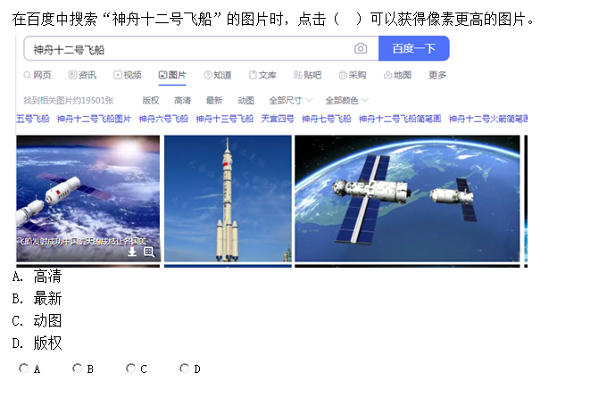
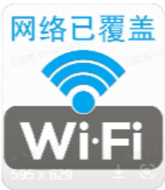
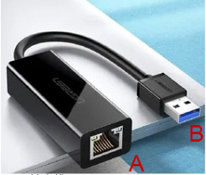

题目导航
PPT选择练习
返回主页
当前：第1题 / 共25题
1. 下列关于防火墙的说法中，错误的是（ ）。
A.安装了防火墙就可以不用安装杀毒软件了
B.除了软件防火墙还有硬件防火墙
C.防护墙可以提高网络的安全性，但不是绝对安全的
D.防火墙可以防止来自被保护区域外部的攻击
解析：1. 选项A错误，防火墙主要用于拦截网络层面的外部攻击、控制网络访问策略，无法检测和清除计算机内部的病毒、木马等恶意程序，杀毒软件专注于终端本地的病毒查杀，二者功能互补，安装防火墙仍需安装杀毒软件；2. 选项B正确，防火墙按存在形式可分为软件防火墙（如电脑端的防火墙软件）和硬件防火墙（如独立的防火墙硬件设备，多用于企业级网络）；3. 选项C正确，防火墙能大幅提升网络安全性，可抵御大部分外部网络攻击，但不存在绝对安全的防护设备，防火墙可能存在漏洞，且无法防范内部攻击、钓鱼诈骗、病毒邮件等风险；4. 选项D正确，防火墙的核心功能之一就是构建网络防护屏障，对来自被保护区域外部的非法网络访问、攻击行为进行识别和拦截。
答题解析
2. 在百度中搜索 “神舟十二号飞船” 的图片时，点击（ ）可以获得像素更高的图片。

A.高清
B.最新
C.动图
D.版权
解析：1. 选项A正确，百度图片的「高清」筛选标签专门用于过滤像素更高、画面更清晰的图片，是获取高像素图片的核心筛选方式；2. 选项B错误，「最新」标签仅筛选近期上线的图片，与图片像素高低无关联；3. 选项C错误，「动图」标签筛选的是GIF格式动态图片，这类图片的像素和画质通常远低于静态高清图；4. 选项D错误，「版权」标签用于筛选有明确版权归属的图片，版权属性和图片像素没有直接关系。
答题解析
3. 下列属于有线网络传输介质的是（ ）。
A.光纤
B.蓝牙
C.红外线
D.微波
解析：1. 选项A正确，光纤是典型的有线网络传输介质，通过光信号在玻璃或塑料纤维中传输数据，具有传输速率高、抗干扰性强的特点，广泛应用于有线宽带、光纤通信等场景；2. 选项B错误，蓝牙是短距离的无线通信技术，依靠无线电波传输数据，无物理传输线路，属于无线网络传输方式；3. 选项C错误，红外线通过红外光信号实现无线数据传输，需点对点无遮挡传输，属于无线网络传输介质；4. 选项D错误，微波通过高频无线电波进行无线通信，可实现远距离无线数据传输，是无线网络的重要传输方式，无物理线路连接。
答题解析
4. 数值模拟和预测是天气预报中非常关键的任务。传统的数值模拟和预测方法需要大量计算资源，并且往往需要多次迭代才能得到准确的结果。利用计算机技术可以将数值模拟和预测任务分解到不同的计算节点中进行并行计算，大幅提高了计算效率和准确度，这主要利用了计算机网络中的（ ）功能。
A.资源共享
B.分布计算
C.数据通信
D.负载均衡
解析：1. 选项A错误，资源共享指的是网络中的多个节点共用硬件、软件、数据等资源（如共享打印机、共享文件），核心是“资源共用”，而非任务的分解计算，与题干不符；2. 选项B正确，分布计算（分布式计算）是将一个庞大、复杂的计算任务**分解为多个子任务**，分配到网络中不同的计算节点上并行处理，最终将各节点的计算结果整合得到最终答案，题干中天气预报的数值模拟任务分解到不同节点并行计算，正是分布计算的典型应用；3. 选项C错误，数据通信是计算机网络的基础功能，指的是网络中各节点之间的信息、数据传输，仅体现数据的传递，不涉及任务的分解与并行计算，并非题干利用的核心功能；4. 选项D错误，负载均衡是将网络请求、计算任务**均匀分配**到多个节点，核心是“均衡负载，避免单节点过载”，而题干重点是“复杂任务的分解并行计算”，并非简单的任务均匀分配，二者核心目的不同。
答题解析
5. 下列属于无线传输介质的是（ ）。
①红外线 ②光纤 ③微波 ④电磁波 ⑤同轴电缆 ⑥蓝牙
A.②③④⑤
B.①③④⑥
C.②④⑤⑥
D.②③⑤⑥
解析：本题核心区分**无线传输介质**（无物理传输线路，依靠电磁波类信号传输）和**有线传输介质**（依托物理线缆传输），逐一分析： 1. ①红外线：无线传输，通过红外光信号实现短距离无线数据交互，属于无线传输介质； 2. ②光纤：有线传输，依靠光信号在玻璃/塑料纤维线缆中传输，属于有线传输介质； 3. ③微波：无线传输，通过高频微波信号实现远距离无线通信，属于无线传输介质； 4. ④电磁波：无线传输的核心载体，蓝牙、微波、红外线等无线传输均依靠电磁波传递信号，属于无线传输介质； 5. ⑤同轴电缆：有线传输，依托铜质同轴线缆传输电信号，属于有线传输介质； 6. ⑥蓝牙：无线传输，通过短波无线电波实现短距离无线通信，属于无线传输介质。
综上，属于无线传输介质的是①③④⑥，对应选项B。
答题解析
6. 建立计算机网络的主要目的是（ ）。
A. 共享数据资源
B. 提高计算机运行速度
C. 连接多台计算机
D. 实现分布处理
解析：1. A正确，**资源共享（含数据、硬件、软件资源）** 是建立计算机网络的核心且主要目的，其中共享数据资源是最普遍的应用场景，也是计算机网络诞生和发展的核心驱动力； 2. B错误，计算机的运行速度由自身硬件配置（CPU、内存、显卡等）决定，接入网络不会改变单台计算机的本地运行性能； 3. C错误，“连接多台计算机”是建立网络的**实现手段**，而非目的，连接设备的最终诉求是为了实现资源共享和数据通信，并非单纯连接； 4. D错误，实现分布处理是计算机网络的**高级应用功能**，仅用于大型科学计算、海量数据处理等场景，并非面向普通用户的主要目的。
答题解析
7. 下列使用计算机网络的过程中，做法错误的是（ ）。
A. 将未经确认的消息分享到同学群
B. 在论坛中与网友分享毕业旅游心得
C. 在公共电脑上清除浏览器的浏览记录
D. 遇到喜欢的视频保存到本地手机上
解析：1. A错误，未经确认的消息可能是谣言、虚假信息，将其分享到同学群会造成虚假信息的传播，扰乱网络环境，同时可能给他人带来误导，这是不符合网络文明规范的错误做法； 2. B正确，在论坛中分享毕业旅游心得，属于正常的网络信息交流和情感分享，不违反网络使用规范，是合理的网络使用行为； 3. C正确，公共电脑会被多人使用，使用完毕后清除浏览器浏览记录，能够保护自己的个人隐私信息不被后续使用者查看，是安全、规范的网络使用习惯； 4. D正确，将喜欢的视频保存到本地手机上，若用于个人欣赏且不涉及版权侵权问题，属于正常的个人网络行为，无违规之处。
答题解析
8. 某机构的域名为www.panda.org.cn，由域名可知该机构最有可能是（ ）。
A. 教育机构
B. 政府机构
C. 商业机构
D. 非盈利性机构
解析：1. A错误，教育机构的顶级域名后缀通常为「.edu」（国际）或「.edu.cn」（国内），例如高校域名多包含该后缀，与题干中的「.org.cn」不符； 2. B错误，政府机构的顶级域名后缀通常为「.gov」（国际）或「.gov.cn」（国内），这是政府部门域名的专属后缀，题干域名无此标识； 3. C错误，商业机构的顶级域名后缀通常为「.com」（国际）或「.com.cn」（国内），是最常见的企业、商业平台域名后缀，与题干后缀不符； 4. D正确，国际通用域名中，「.org」后缀专门用于标识**非盈利性组织、公益机构、行业协会**等，题干中的域名为「.org.cn」（国内非盈利性机构域名），因此该机构最有可能是非盈利性机构。
答题解析
9. 家庭成员的手机、笔记本、平板等电子设备可以通过无线路由器接入到因特网中，这其中的无线路由器属于（ ）。
A. 网络传输介质
B. 网络连接设备
C. 网络传输协议
D. 网络安全设备
解析：1. A错误，网络传输介质是用于传递网络数据的**物理载体**，分为有线（光纤、网线、同轴电缆）和无线（红外线、微波、蓝牙）两类，无线路由器是电子设备，并非传输数据的载体，因此不属于传输介质； 2. B正确，网络连接设备的核心作用是**连接不同的网络设备或网络段，实现数据的转发和互通**，无线路由器既可以连接外网（因特网），又可以连接内网的手机、笔记本等设备，实现多终端接入因特网，是典型的家庭/小型办公场景网络连接设备； 3. C错误，网络传输协议是网络设备之间通信的**规则和约定**（如TCP/IP、HTTP、WiFi协议等），是软件层面的逻辑规范，而无线路由器是硬件设备，并非协议本身； 4. D错误，网络安全设备是专门用于保障网络安全、抵御网络攻击的设备（如防火墙、入侵检测设备），无线路由器的核心功能是网络连接和数据转发，即便部分路由器带有简单防火墙功能，其本质也不属于专用网络安全设备。
答题解析
10. 使用搜索引擎搜索信息时，说法正确的是（ ）。
A. 使用全文搜索或者目录搜索进行信息搜索时，搜索到的都是具体内容
B. 使用搜索引擎可以搜索出一切需要搜索的信息
C. 使用相同的关键词在不同的搜索引擎中进行搜索，结果都是相同的
D. 合理使用逻辑控制符号可以增强搜索结果的准确性
解析：1. A错误，全文搜索（如百度、谷歌）搜索到的是包含关键词的网页链接及摘要，目录搜索（如早期的雅虎目录）是按分类层级整理的网站目录，二者都不是直接返回“具体内容”，更多是信息的索引和指向，无法直接获取完整的具体内容； 2. B错误，搜索引擎的索引范围是有限的，存在大量未被收录的私密信息、付费信息、小众资源等，无法搜索到“一切需要的信息”，该说法过于绝对； 3. C错误，不同搜索引擎的**索引数据库、排序算法、收录规则**都存在差异，即使使用完全相同的关键词，搜索结果的数量、排序、内容覆盖度也会有所不同，不会完全一致； 4. D正确，逻辑控制符号（如“AND”“OR”“NOT”，对应中文搜索中的“+”“-”“|”，还有引号""实现精确匹配）可以精准限定搜索范围，过滤无关信息，从而大幅增强搜索结果的准确性和相关性，是高效搜索的核心技巧。
答题解析
11. 要将计算机接入到互联网中，必须安装的硬件设备是（ ）。
A. 声卡
B. 显卡
C. 网卡
D. 光驱
解析：1. A错误，声卡的核心功能是处理音频信号，实现计算机的声音输入（麦克风录音）和输出（扬声器播放声音），与计算机接入互联网无关，无声卡不影响网络连接； 2. B错误，显卡的核心功能是处理图像视频信号，将计算机的图像数据转换为显示器可识别的信号，实现画面显示，性能高低影响游戏、视频剪辑效果，与网络接入无关联； 3. C正确，网卡（网络适配器）是计算机与网络之间建立连接的**专用硬件设备**，负责将计算机的数据转换为网络可传输的信号（有线网卡通过网线、无线网卡通过无线电波），没有网卡，计算机无法与外部网络建立连接，是接入互联网的必备硬件； 4. D错误，光驱的核心功能是读取或写入光盘（CD、DVD）中的数据，随着U盘、云存储的普及，光驱已逐渐被淘汰，其功能与网络接入毫无关系，无光驱完全不影响计算机接入互联网。
答题解析
12. 建立计算机网络的主要目的是（ ）。
A. 促进经济
B. 网络购物
C. 线上教学
D. 资源共享
解析：1. A错误，“促进经济”是计算机网络普及和发展后带来的**间接社会效应**，并非建立计算机网络的最初主要目的，网络的核心价值不是直接推动经济； 2. B错误，“网络购物”是计算机网络发展到一定阶段后的**具体应用场景**，依托网络的资源共享和数据通信功能实现，并非建立网络的核心目的； 3. C错误，“线上教学”和网络购物类似，是计算机网络在教育领域的**具体应用**，是网络功能的延伸，而非建立网络的主要目的； 4. D正确，**资源共享（包括数据资源、硬件资源、软件资源）** 是建立计算机网络的**核心和最初主要目的**，计算机网络诞生的初衷就是让不同设备之间能够互通有无、共用各类资源，后续的各类应用均围绕这一核心功能展开。
答题解析
13. 通常在商场、机场、火车站等公共场所中都能看到张贴有下图中的 Wi-Fi 图样，这里的 Wi-Fi 指的是（ ）。

A. 无线网络
B. 有线网络
C. 专用网络
D. 收费网络
解析：1. A正确，Wi-Fi（无线保真）是一种**短距离无线网络通信技术**，通过无线电波传输数据，无需物理网线即可让手机、电脑等设备接入网络，商场、机场等公共场所张贴的Wi-Fi图样，就是提供免费或付费的无线网络接入服务，这是Wi-Fi的核心定义； 2. B错误，有线网络需要依靠网线、光纤等物理传输介质建立连接，而Wi-Fi无需任何物理线缆，二者本质不同，因此Wi-Fi不属于有线网络； 3. C错误，专用网络是指为特定群体、特定用途搭建的封闭网络（如企业内部办公网络、校园专用网络），而公共场所的Wi-Fi通常是面向所有公众开放的公共网络，并非专用网络，且“专用网络”也不是Wi-Fi的本质属性； 4. D错误，Wi-Fi仅代表网络的连接方式（无线），与是否收费无关——公共场所既有免费Wi-Fi，也有需要付费/认证才能使用的Wi-Fi，“收费”不是Wi-Fi的固有属性，也不是其定义。
答题解析
14. 李老师在访问学校网站时发现使用网站域名不能打开网页，使用学校网站 IP 地址又可以正常打开网页，因此他推断是自己电脑中的（ ）。
A. IP 地址配置错误
B. 子网掩码设置错误
C. 网关设置错误
D. DNS 服务器地址配置错误
解析：1. A错误，IP地址是计算机在网络中的唯一标识，若IP地址配置错误，计算机无法正常接入网络，既无法通过域名访问网页，也无法通过IP地址访问网页，与题干中“IP地址可正常打开”的现象不符； 2. B错误，子网掩码的作用是划分网络段、区分网络地址和主机地址，若子网掩码设置错误，会导致无法与同一网段或外网设备通信，表现为全网访问失败（域名和IP均无法打开），不符合题干场景； 3. C错误，网关是计算机访问外网的“出入口”，若网关设置错误，计算机无法与外部网络建立连接，同样会出现域名和IP均无法访问网页的情况，与题干现象矛盾； 4. D正确，DNS（域名系统）的核心功能是**将易记忆的域名（如www.school.cn）转换为计算机可识别的IP地址**，相当于“网络地址翻译官”。题干中“IP地址可正常打开，域名无法打开”，说明网络连接正常，仅存在“域名到IP地址的转换失败”，这是DNS服务器地址配置错误（或DNS服务器故障）的典型表现。
答题解析
15. 网站域名相比网站的 IP 地址更容易让人们记住，域名方便记忆的特性便成为我们访问网站的首选，使用域名www.baidu.com可以访问（ ）网站。
A. 新浪
B. 百度
C. 雅虎
D. 谷歌
解析：1. A错误，新浪网站的核心域名是「www.sina.com.cn」，并非「www.baidu.com」，该域名无法访问新浪网站； 2. B正确，「baidu」是百度公司的品牌标识，「www.baidu.com」是百度搜索引擎的官方核心域名，输入该域名可直接访问百度网站，这是日常网络使用中最基础的常识； 3. C错误，雅虎网站的核心域名是「www.yahoo.com」，与「www.baidu.com」无关，无法通过该域名访问雅虎； 4. D错误，谷歌网站的核心域名是「www.google.com」，「www.baidu.com」是百度的专属域名，无法访问谷歌网站。
答题解析
16. 超薄笔记本使用下图所示的转换器接入因特网时，A 和 B 两个接口分别连接的是（ ）。

A. 同轴电缆 USB 口
B. USB 口 双绞线
C. 光纤 双绞线
D. 双绞线 USB 口
解析：1. A错误，同轴电缆是圆形粗线缆，多用于早期有线电视、老式网络，接口样式与图中A接口不符；且顺序颠倒，不符合转换器的实际连接逻辑； 2. B错误，该选项的接口连接顺序颠倒，与图中A、B接口的实际样式和转换器的使用逻辑不符； 3. C错误，光纤接口多为方形小接口（SC口、LC口），且需要专用光模块，与图中A接口样式不符，无法对应； 4. D正确，从图中可清晰观察到： - 接口A是**RJ45网口**，专门用于连接**双绞线**（日常使用的网线就是双绞线），实现有线网络信号的传输； - 接口B是**USB接口**，用于连接超薄笔记本的USB端口，为转换器供电并实现转换器与笔记本之间的数据交互，这是该类网络转换器的标准连接方式，因此A对应双绞线、B对应USB口，答案为D。
答题解析
17. 因特网上的计算机千千万万，可以通过（ ）来区分因特网上的每一台计算机。
A. 计算机名
B. 用户名
C. 工作组名
D. IP 地址
解析：1. A错误，计算机名是给单台计算机设置的自定义名称（如“My-Laptop”），仅用于本地或局域网内的标识，不具有全网唯一性——因特网上可以有大量计算机使用相同的计算机名，无法用于区分全网的计算机； 2. B错误，用户名是登录计算机、网站、软件等的身份标识（如电脑的登录账户、微信用户名），仅用于验证用户身份，不仅不具有全网唯一性，还与“区分计算机”无关，它区分的是**用户**而非**计算机**； 3. C错误，工作组名是局域网内为了方便设备管理而划分的分组名称（如“WORKGROUP”），仅适用于小型局域网内部，既不具备全网唯一性，也无法区分因特网上的不同计算机； 4. D正确，IP地址是因特网上给每一台接入网络的设备分配的**唯一数字标识**，相当于计算机在因特网上的“身份证号”，具有全网唯一性（在同一时刻，一台设备对应一个唯一的公网IP地址），正是依靠IP地址，因特网才能准确识别和区分千千万万台不同的计算机，实现设备之间的数据通信。
答题解析
18. 以下有关浏览器收藏夹的描述，不正确的是（ ）。
A. 通过浏览器收藏夹可以快速访问已收藏的网站
B. 被浏览器收藏夹收藏的网址，可以在断开 Internet 链接的状态下浏览该网页
C. 使用浏览器收藏夹可以对已收藏的网页网址进行分类管理
D. 浏览器收藏夹收藏的是网页的网址
解析：1. A正确，浏览器收藏夹的核心便捷性就在于——将常用网站的网址保存后，无需手动输入冗长域名，直接点击收藏项即可快速访问对应网站，这是收藏夹的核心实用功能； 2. B错误，浏览器收藏夹仅保存了网页的**网址（链接）**，而非网页的完整内容（文字、图片、视频等）。要浏览网页的实际内容，必须通过互联网连接访问该网址对应的服务器，获取网页数据。断开Internet链接后，无法与服务器建立通信，即便有收藏的网址，也无法打开并浏览该网页的实际内容； 3. C正确，主流浏览器的收藏夹都支持创建文件夹、归类整理收藏的网址（如“工作网站”“学习资料”“娱乐网站”），方便用户后续查找和管理，这是收藏夹的重要辅助功能； 4. D正确，浏览器收藏夹的本质是**保存网页的URL（统一资源定位符，即网址）**，而非网页的本地副本。点击收藏项时，浏览器会自动加载该网址对应的在线网页。
答题解析
19. 下列域名中最有可能是教育机构的官方网址是（ ）。
A. www.panda.org.cn
B. www.12339.gov.cn
C. www.tsinghua.edu.cn
D. www.sina.com.cn
解析：1. A错误，域名后缀「.org.cn」对应的是**非盈利性机构/公益组织**，「www.panda.org.cn」大概率是与熊猫相关的公益机构网址，并非教育机构； 2. B错误，域名后缀「.gov.cn」是**政府机构的专属域名后缀**，「www.12339.gov.cn」是国家安全机关的官方网址，与教育机构无关； 3. C正确，域名后缀「.edu.cn」是**国内教育机构（尤其是高校、科研院校）的专属域名后缀**，「tsinghua」对应“清华”，「www.tsinghua.edu.cn」是清华大学的官方网址，属于典型的教育机构网址； 4. D错误，域名后缀「.com.cn」对应的是**商业机构/企业平台**，「www.sina.com.cn」是新浪网的官方网址，属于商业媒体平台，并非教育机构。
答题解析
20. 通过因特网提供的 Telnet 服务可以（ ）。
A. 传输文件
B. 发送电子邮件
C. 视频聊天
D. 远程登录
解析：1. A错误，因特网中专门用于传输文件的服务/协议是**FTP（文件传输协议）**（如上传、下载文件），而非Telnet，Telnet不具备高效文件传输的功能； 2. B错误，发送电子邮件依赖的是**SMTP（简单邮件传输协议）**（发送邮件）和POP3/IMAP（接收邮件），与Telnet服务无关； 3. C错误，视频聊天依赖专门的即时通信协议和音视频编码技术（如WebRTC、RTMP等），需要支持大数据量、低延迟的传输，Telnet是早期简单文本协议，无法实现视频聊天功能； 4. D正确，Telnet（远程登录协议）是因特网早期的核心服务之一，其核心功能就是**让用户通过本地计算机，远程登录到因特网上的另一台主机（服务器）**，并在本地终端上操作和控制远程主机，相当于“坐在远程主机前使用它”（早期多为纯文本界面操作）。
答题解析
进入下一题
提交所有答案并查看统计结果
闯关完成！答题统计
总答题数：0题
答对题数：0题
正确率：0%
↑
↓
确定